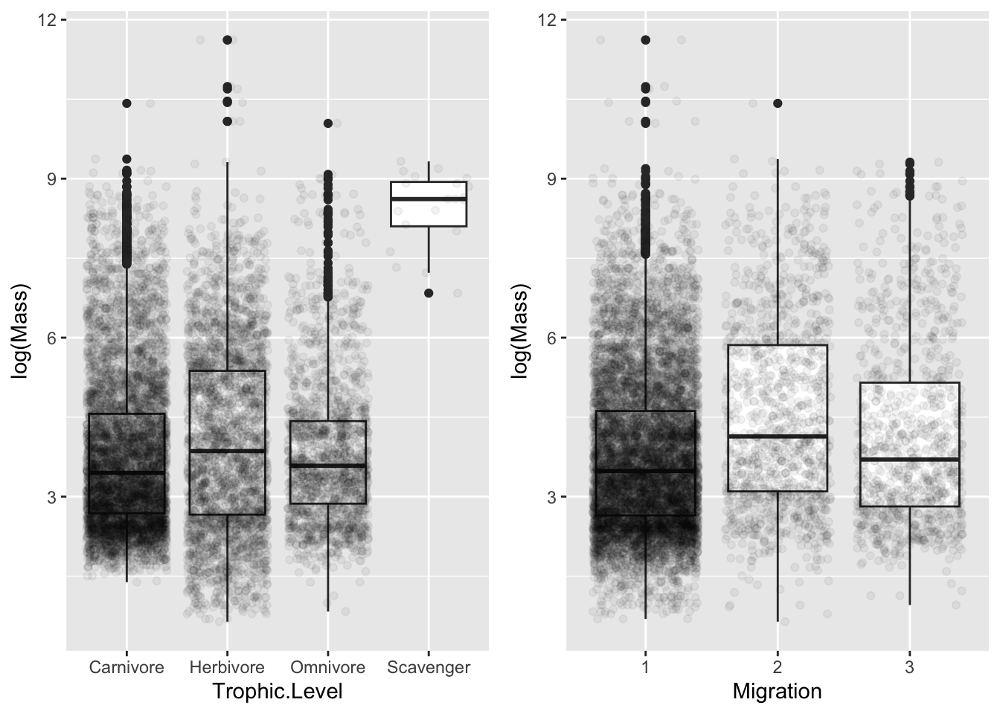
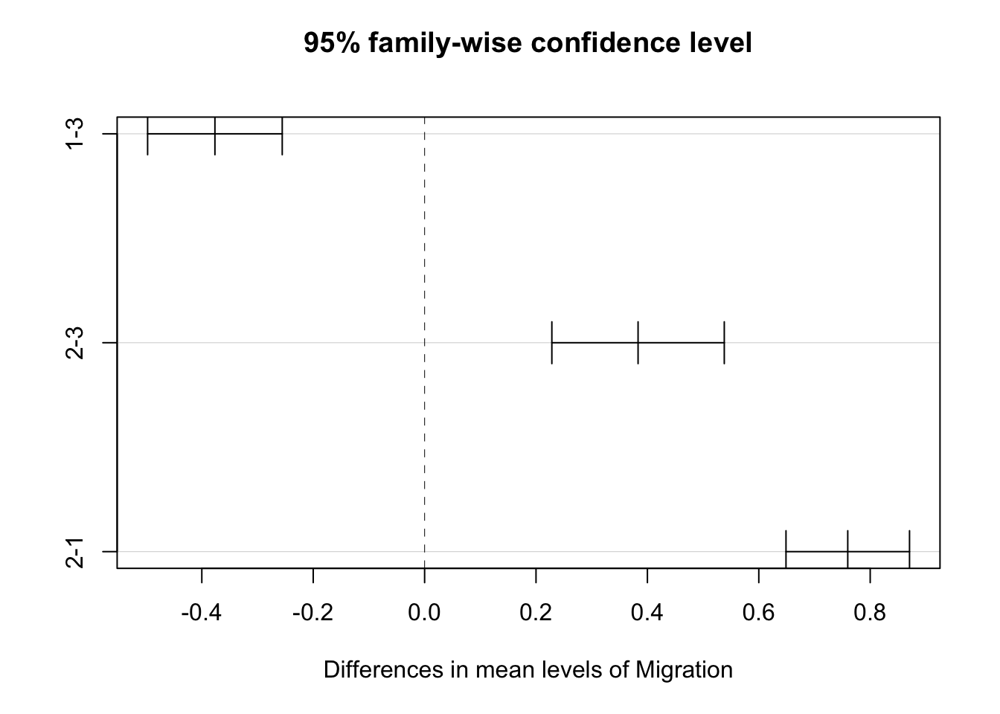
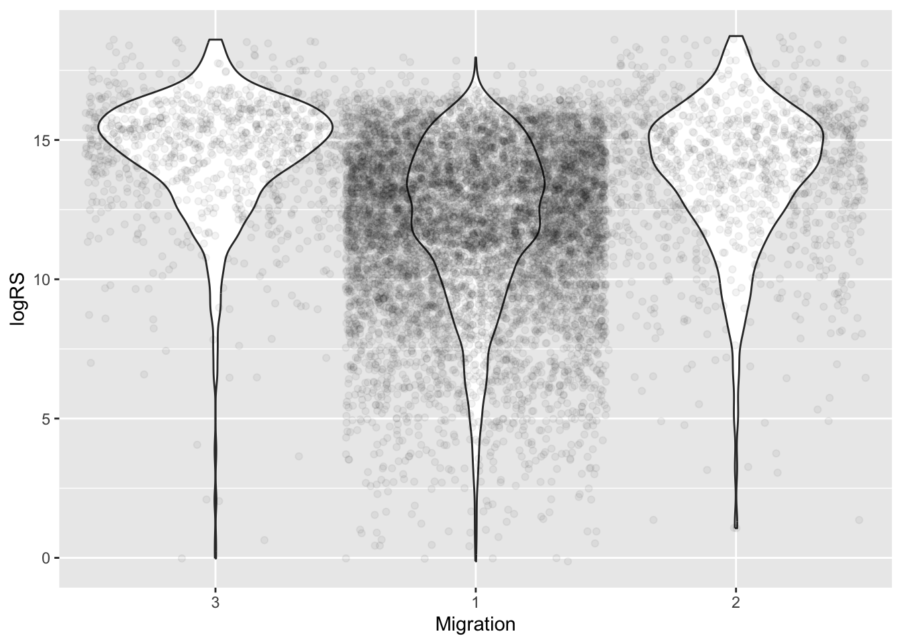

library(tidyverse)
library(skimr)
library(cowplot)
library(broom)
library(infer)
library(mosaic)
library(ggpubr) # for ggqqplot()
f <- "https://raw.githubusercontent.com/difiore/ada-datasets/main/AVONETdataset1.csv"
d <- read_csv(f, col_names = TRUE)Exercise 10 Solution
• Solution
- Using the {tidyverse}
read_csv()function, load the “AVONETdataset1.csv” dataset as a “tibble” named d.
- Winnow the dataset to variables of interest.
d <- d |>
select(Species1, Family1, Order1, Beak.Length_Culmen, Beak.Width, Beak.Depth,
Tarsus.Length, Wing.Length, Tail.Length, Mass, Habitat, Migration, Trophic.Level,
Trophic.Niche, Min.Latitude, Max.Latitude, Centroid.Latitude, Range.Size,
Primary.Lifestyle)- Do a bit of exploratory data analysis.
skim(d)| Name | d |
| Number of rows | 11009 |
| Number of columns | 19 |
| _______________________ | |
| Column type frequency: | |
| character | 7 |
| numeric | 12 |
| ________________________ | |
| Group variables | None |
Variable type: character
| skim_variable | n_missing | complete_rate | min | max | empty | n_unique | whitespace |
|---|---|---|---|---|---|---|---|
| Species1 | 0 | 1.00 | 9 | 36 | 0 | 11009 | 0 |
| Family1 | 0 | 1.00 | 7 | 18 | 0 | 243 | 0 |
| Order1 | 0 | 1.00 | 10 | 19 | 0 | 36 | 0 |
| Habitat | 98 | 0.99 | 4 | 14 | 0 | 11 | 0 |
| Trophic.Level | 5 | 1.00 | 8 | 9 | 0 | 4 | 0 |
| Trophic.Niche | 10 | 1.00 | 8 | 21 | 0 | 10 | 0 |
| Primary.Lifestyle | 0 | 1.00 | 6 | 11 | 0 | 5 | 0 |
Variable type: numeric
| skim_variable | n_missing | complete_rate | mean | sd | p0 | p25 | p50 | p75 | p100 | hist |
|---|---|---|---|---|---|---|---|---|---|---|
| Beak.Length_Culmen | 0 | 1.00 | 26.36 | 24.39 | 4.50 | 14.70 | 19.90 | 28.50 | 414.20 | ▇▁▁▁▁ |
| Beak.Width | 0 | 1.00 | 6.58 | 5.15 | 0.70 | 3.60 | 5.00 | 7.70 | 88.90 | ▇▁▁▁▁ |
| Beak.Depth | 0 | 1.00 | 8.06 | 7.59 | 1.00 | 3.80 | 5.80 | 9.40 | 110.90 | ▇▁▁▁▁ |
| Tarsus.Length | 0 | 1.00 | 28.73 | 24.84 | 2.50 | 17.40 | 22.00 | 31.30 | 481.20 | ▇▁▁▁▁ |
| Wing.Length | 0 | 1.00 | 124.78 | 93.44 | 0.10 | 66.80 | 91.50 | 145.50 | 789.90 | ▇▂▁▁▁ |
| Tail.Length | 0 | 1.00 | 86.65 | 61.08 | 0.10 | 50.20 | 68.70 | 99.90 | 812.80 | ▇▁▁▁▁ |
| Mass | 0 | 1.00 | 267.15 | 1883.03 | 1.90 | 15.00 | 35.50 | 121.00 | 111000.00 | ▇▁▁▁▁ |
| Migration | 23 | 1.00 | 1.29 | 0.62 | 1.00 | 1.00 | 1.00 | 1.00 | 3.00 | ▇▁▁▁▁ |
| Min.Latitude | 57 | 0.99 | -6.44 | 22.37 | -85.58 | -21.22 | -7.15 | 8.07 | 68.08 | ▁▃▇▃▁ |
| Max.Latitude | 57 | 0.99 | 11.51 | 23.32 | -65.12 | -3.33 | 9.00 | 22.07 | 85.01 | ▁▃▇▂▁ |
| Centroid.Latitude | 57 | 0.99 | 2.95 | 22.07 | -71.04 | -9.73 | -0.22 | 15.28 | 78.43 | ▁▃▇▂▁ |
| Range.Size | 57 | 0.99 | 2578859.38 | 7629310.06 | 0.88 | 54052.87 | 416076.61 | 2187040.21 | 136304432.20 | ▇▁▁▁▁ |
The taxomic variables, along with Habitat, Trophic.Level, Trophic.Niche, and Migration, are categorical, although Migration is scored using integer factors as “1”, “2”, or “3”. The remaining variables are numeric.
Challenge 1
Step 1
- Make boxplots of log(Mass) in relation to Trophic.Level and Migration and convert the variable Migration into a factor.
d <- d |>
mutate(logMass = log(Mass), logRS = log(Range.Size), logBeak = log(Beak.Length_Culmen),
logTarsus = log(Tarsus.Length), Migration = as.factor(Migration))
p1 <- ggplot(data = d |>
drop_na(Trophic.Level), aes(x = Trophic.Level, y = log(Mass))) + geom_boxplot() +
geom_jitter(alpha = 0.05)
p2 <- ggplot(data = d |>
drop_na(Migration), aes(x = Migration, y = log(Mass))) + geom_boxplot() + geom_jitter(alpha = 0.05)
plot_grid(p1, p2, nrow = 1)
Step 2
- Run linear models using the
lm()function to look at the relationship between log(Mass) and Trophic.Level and between log(Mass) and Migration.
m1 <- lm(logMass ~ Trophic.Level, data = d)
m2 <- lm(logMass ~ Migration, data = d)- Examine the output of the resultant linear models. Is log(Mass) associated with either Trophic.Level or Migration category? That is, in the global test of significance, is the F statistic large enough to reject the null hypothesis of an F value of zero?
summary(m1)##
## Call:
## lm(formula = logMass ~ Trophic.Level, data = d)
##
## Residuals:
## Min 1Q Median 3Q Max
## -3.4229 -1.1551 -0.3028 0.8982 7.5526
##
## Coefficients:
## Estimate Std. Error t value Pr(>|t|)
## (Intercept) 3.80834 0.01967 193.632 < 2e-16 ***
## Trophic.LevelHerbivore 0.25639 0.03406 7.528 5.54e-14 ***
## Trophic.LevelOmnivore 0.01422 0.04116 0.345 0.73
## Trophic.LevelScavenger 4.63189 0.34447 13.446 < 2e-16 ***
## ---
## Signif. codes: 0 '***' 0.001 '**' 0.01 '*' 0.05 '.' 0.1 ' ' 1
##
## Residual standard error: 1.538 on 11000 degrees of freedom
## (5 observations deleted due to missingness)
## Multiple R-squared: 0.02094, Adjusted R-squared: 0.02067
## F-statistic: 78.42 on 3 and 11000 DF, p-value: < 2.2e-16summary(m2)##
## Call:
## lm(formula = logMass ~ Migration, data = d)
##
## Residuals:
## Min 1Q Median 3Q Max
## -3.8924 -1.1769 -0.3088 0.9152 7.8427
##
## Coefficients:
## Estimate Std. Error t value Pr(>|t|)
## (Intercept) 3.77457 0.01636 230.710 < 2e-16 ***
## Migration2 0.75971 0.04731 16.059 < 2e-16 ***
## Migration3 0.37647 0.05155 7.303 3.02e-13 ***
## ---
## Signif. codes: 0 '***' 0.001 '**' 0.01 '*' 0.05 '.' 0.1 ' ' 1
##
## Residual standard error: 1.535 on 10983 degrees of freedom
## (23 observations deleted due to missingness)
## Multiple R-squared: 0.02563, Adjusted R-squared: 0.02546
## F-statistic: 144.5 on 2 and 10983 DF, p-value: < 2.2e-16In both cases, the global test is significant.
- Given the regression coefficients returned for your Migration model, which Migration categor(ies) are different than the reference level? What level is the reference level?
In m2, Migration levels 2 and 3 are both different from Migration level 1, which is the reference level.
- Relevel and assess differences among the remaining pair of Migration categories.
d <- d |>
mutate(Migration = relevel(Migration, ref = "3"))
m2 <- lm(logMass ~ Migration, data = d)
summary(m2)##
## Call:
## lm(formula = logMass ~ Migration, data = d)
##
## Residuals:
## Min 1Q Median 3Q Max
## -3.8924 -1.1769 -0.3088 0.9152 7.8427
##
## Coefficients:
## Estimate Std. Error t value Pr(>|t|)
## (Intercept) 4.15104 0.04889 84.909 < 2e-16 ***
## Migration1 -0.37647 0.05155 -7.303 3.02e-13 ***
## Migration2 0.38324 0.06603 5.804 6.67e-09 ***
## ---
## Signif. codes: 0 '***' 0.001 '**' 0.01 '*' 0.05 '.' 0.1 ' ' 1
##
## Residual standard error: 1.535 on 10983 degrees of freedom
## (23 observations deleted due to missingness)
## Multiple R-squared: 0.02563, Adjusted R-squared: 0.02546
## F-statistic: 144.5 on 2 and 10983 DF, p-value: < 2.2e-16Based on the re-leveled model results, Migration levels 2 and 3 are also different from one another.
Step 3
- Conduct a post-hoc Tukey Significant Differences test to also evaluate which Migration categories differ “significantly” from one another.
# we need an ANOVA object to run a Tukey test
m2 <- aov(logMass ~ Migration, data = d)
(posthoc <- TukeyHSD(m2, which = "Migration", conf.level = 0.95))## Tukey multiple comparisons of means
## 95% family-wise confidence level
##
## Fit: aov(formula = logMass ~ Migration, data = d)
##
## $Migration
## diff lwr upr p adj
## 1-3 -0.3764693 -0.4973105 -0.2556282 0
## 2-3 0.3832374 0.2284536 0.5380211 0
## 2-1 0.7597067 0.6488157 0.8705977 0plot(posthoc)
Comparisons among all pairs of levels are significant.
Step 4
- Use a permutation approach to inference to generate a null distribution of F statistic values for the model of log(Mass) in relation to Trophic.Level and calculate a p value for your original F statistic.
original.F <- aov(logMass ~ Trophic.Level, data = d) |>
tidy() |>
filter(term == "Trophic.Level") |>
pull(statistic)
# show aov results for F statistic and p value for omnibus F test
original.F## [1] 78.42283# using {infer}
permuted.F <- d |>
specify(logMass ~ Trophic.Level) |>
hypothesize(null = "independence") |>
generate(reps = 1000, type = "permute") |>
calculate(stat = "F")
visualize(permuted.F) + shade_p_value(obs_stat = original.F, direction = "greater")p.value <- permuted.F |>
get_p_value(obs_stat = original.F, direction = "greater")
# or... using {mosaic}
reps <- 1000
permuted.F <- do(reps) * {
d |>
mutate(Trophic.Level = sample(Trophic.Level)) %>%
# note the use of the %>% pipe operator in the line above... for some
# reason, the native pipe operator (`|>`) throws an error!
aov(logMass ~ Trophic.Level, data = .) |>
tidy() |>
filter(term == "Trophic.Level") |>
pull(statistic)
}
permuted.F <- as_tibble(permuted.F) |>
rename(stat = "result")
p.value <- permuted.F |>
get_p_value(obs_stat = original.F, direction = "greater")
p.value## # A tibble: 1 × 1
## p_value
## <dbl>
## 1 0Challenge 2
Step 1
- Create the following two new variables and add them to AVONET dataset:
- Relative beak length, which you should calculate as the residual of log(Beak.Length_Culmen) on log(Mass).
- Relative tarsus length, which you should calculate as the residual of log(Tarsus.Length) on log(Mass).
relBeak <- lm(logBeak ~ logMass, data = d)
relTarsus <- lm(logTarsus ~ logMass, data = d)
d <- d |>
mutate(relBeak = relBeak$residuals, relTarsus = relTarsus$residuals)Step 2
- Make a boxplot or violin plot of your new relative tarsus length variable in relation to Primary.Lifestyle and of your new relative beak length variable in relation to Trophic.Niche
d <- d |>
mutate(Primary.Lifestyle = factor(Primary.Lifestyle, levels = c("Aerial", "Aquatic",
"Insessorial", "Terrestrial", "Generalist")))
p1 <- ggplot(data = d |>
drop_na(Primary.Lifestyle), aes(x = Primary.Lifestyle, y = relTarsus)) + geom_boxplot() +
# geom_jitter(alpha = 0.05) +
theme(axis.text.x = element_text(angle = 45, hjust = 1))
d <- d |>
mutate(Trophic.Niche = factor(Trophic.Niche, levels = c("Nectarivore", "Herbivore aquatic",
"Frugivore", "Granivore", "Herbivore terrestrial", "Aquatic predator", "Invertivore",
"Vertivore", "Scavenger", "Omnivore")))
p2 <- ggplot(data = d |>
drop_na(Trophic.Niche), aes(x = Trophic.Niche, y = relBeak)) + geom_boxplot() +
# geom_jitter(alpha = 0.05) +
theme(axis.text.x = element_text(angle = 45, hjust = 1))
plot_grid(p1, p2, nrow = 1)Step 3
- Run ANOVA analyses to look at the association between geographic range size and the variable Migration. You should first drop those observations for which Migration is not scored and also look at the distribution of the variable Range.Size to decide whether and how it might need to be transformed.
migration <- d |>
drop_na(Migration)
histogram(migration$Range.Size)histogram(migration$logRS)
It looks like Range.Size should be log transformed!
# look at distribution of the data across levels
ggplot(data = migration, aes(x = Migration, y = logRS)) + geom_violin() + geom_jitter(alpha = 0.05,
width = 0.5)
m3 <- lm(logRS ~ Migration, data = migration)
summary(m3)##
## Call:
## lm(formula = logRS ~ Migration, data = migration)
##
## Residuals:
## Min 1Q Median 3Q Max
## -14.5710 -1.4521 0.4357 1.9763 5.9271
##
## Coefficients:
## Estimate Std. Error t value Pr(>|t|)
## (Intercept) 14.55082 0.08896 163.568 < 2e-16 ***
## Migration1 -2.51702 0.09380 -26.834 < 2e-16 ***
## Migration2 -0.73233 0.12015 -6.095 1.13e-09 ***
## ---
## Signif. codes: 0 '***' 0.001 '**' 0.01 '*' 0.05 '.' 0.1 ' ' 1
##
## Residual standard error: 2.785 on 10934 degrees of freedom
## (49 observations deleted due to missingness)
## Multiple R-squared: 0.0869, Adjusted R-squared: 0.08674
## F-statistic: 520.3 on 2 and 10934 DF, p-value: < 2.2e-16- Based on the global model, is range size associated with form of migration? How much of the variance in your measure of range size is associated with Migration behavior level?
From the model summary(), we can see that the F statistic is significant, although the R-squared value suggests that only ~9% of the variation in log(range size) is associated with Migration behavior style.
NOTE: We can calculate the amount of variance explained by the model (i.e., R-squared, or, a.k.a. \(\eta\)-squared) ourselves from the ANOVA table output from running
aov(). To do so, we calculate the ratio of the regression sum of squares to the total sum of squares. The code below pulls these value from atidy()table of the model coefficients…
m3 <- aov(logRS ~ Migration, data = migration)
summary(m3)## Df Sum Sq Mean Sq F value Pr(>F)
## Migration 2 8071 4035 520.3 <2e-16 ***
## Residuals 10934 84798 8
## ---
## Signif. codes: 0 '***' 0.001 '**' 0.01 '*' 0.05 '.' 0.1 ' ' 1
## 49 observations deleted due to missingnesscoefs <- m3 |>
tidy() %>%
select(term, sumsq)
(r2 <- 1 - (coefs |>
filter(term == "Residuals") |>
pull(sumsq))/(coefs |>
summarize(totalSS = sum(sumsq)) |>
pull(totalSS)))## [1] 0.0869031- Given the regression coefficients returned in the output of the model, which Migration categor(ies) are different than the reference level? What level is the reference level?
In the summary() of the m3 linear model, Migration levels 1 and 2 are both different from Migration level 3, which is the reference level (because that is what we releveled to above).
- Re-level and assess differences among the remaining pair of Migration categories.
migration <- migration |>
mutate(Migration = relevel(Migration, ref = "1"))
m3 <- aov(logRS ~ Migration, data = migration)
summary(m3)## Df Sum Sq Mean Sq F value Pr(>F)
## Migration 2 8071 4035 520.3 <2e-16 ***
## Residuals 10934 84798 8
## ---
## Signif. codes: 0 '***' 0.001 '**' 0.01 '*' 0.05 '.' 0.1 ' ' 1
## 49 observations deleted due to missingnessAfter re-leveling, we can see that Migration levels 1 and 2 are also different from one another.
- Also conduct a post-hoc Tukey Honest Significant Differences test to also evaluate which Migration categories differ “significantly” from one another.
(posthoc <- TukeyHSD(m3, which = "Migration", conf.level = 0.95))## Tukey multiple comparisons of means
## 95% family-wise confidence level
##
## Fit: aov(formula = logRS ~ Migration, data = migration)
##
## $Migration
## diff lwr upr p adj
## 3-1 2.5170168 2.297150 2.736883 0
## 2-1 1.7846901 1.582952 1.986428 0
## 2-3 -0.7323266 -1.013964 -0.450689 0plot(posthoc)Step 4
- Winnow your original data to just consider birds from the Infraorder “Passeriformes” (song birds).
pass <- d |>
filter(Order1 == "Passeriformes")- Run separate one-factor ANOVA analyses to look at the association between [1] relative beak length and Primary.Lifestyle and between [2] relative beak length and Trophic.Level. In doing so…
Make boxplots of the response variable by each predictor and by the combination of predictors…
p1 <- ggplot(data = pass, aes(x = Primary.Lifestyle, y = relBeak)) + geom_boxplot() +
geom_jitter(alpha = 0.05) + theme(axis.text.x = element_text(angle = 45, hjust = 1))
p2 <- ggplot(data = pass, aes(x = Trophic.Level, y = relBeak)) + geom_boxplot() +
geom_jitter(alpha = 0.05) + theme(axis.text.x = element_text(angle = 45, hjust = 1))
p3 <- ggplot(data = pass, aes(x = Primary.Lifestyle, y = relBeak)) + geom_boxplot() +
geom_jitter(alpha = 0.05) + facet_wrap(~Trophic.Level) + theme(axis.text.x = element_text(angle = 45,
hjust = 1))
p4 <- ggplot(data = pass, aes(x = Trophic.Level, y = relBeak)) + geom_boxplot() +
geom_jitter(alpha = 0.05) + facet_wrap(~Primary.Lifestyle) + theme(axis.text.x = element_text(angle = 45,
hjust = 1))
plot_grid(plot_grid(p1, p2, nrow = 1), p3, p4, nrow = 3)… and run linear models for each predictor separately and interpret the model output.
m5 <- aov(relBeak ~ Primary.Lifestyle, data = pass)
# or m5 <- lm(relBeak ~ Primary.Lifestyle, data = pass)
summary(m5)## Df Sum Sq Mean Sq F value Pr(>F)
## Primary.Lifestyle 3 18.2 6.067 130.2 <2e-16 ***
## Residuals 6610 307.9 0.047
## ---
## Signif. codes: 0 '***' 0.001 '**' 0.01 '*' 0.05 '.' 0.1 ' ' 1m6 <- aov(relBeak ~ Trophic.Level, data = pass)
# or m6 <- lm(relBeak ~ Trophic.Level, data = pass)
summary(m6)## Df Sum Sq Mean Sq F value Pr(>F)
## Trophic.Level 2 16.31 8.154 174 <2e-16 ***
## Residuals 6611 309.81 0.047
## ---
## Signif. codes: 0 '***' 0.001 '**' 0.01 '*' 0.05 '.' 0.1 ' ' 1Relative beak length is significantly associated with both variables, but the R-squared (or eta- squared) values are quite modest.
Step 5
- Run a two-factor model to look at the association between relative beak length and both Primary.Lifestyle and Trophic.Level among the passeriforms. Based on the model output, what would you conclude about how relative beak length is related to these two variables?
m7 <- aov(relBeak ~ Primary.Lifestyle + Trophic.Level, data = pass)
# or m7 <- lm(relBeak ~ Primary.Lifestyle + Trophic.Level, data = pass)
summary(m7)## Df Sum Sq Mean Sq F value Pr(>F)
## Primary.Lifestyle 3 18.20 6.067 138.1 <2e-16 ***
## Trophic.Level 2 17.68 8.838 201.2 <2e-16 ***
## Residuals 6608 290.24 0.044
## ---
## Signif. codes: 0 '***' 0.001 '**' 0.01 '*' 0.05 '.' 0.1 ' ' 1Both variables are important predictors of relative beak length.
Step 6
- Finally, run an additional two-way model with the same dataset and predictors, but adding the possibility of an interaction term. Based on the model output, what would you now conclude about how relative beak length is related to these two variables?
m8 <- aov(relBeak ~ Primary.Lifestyle + Trophic.Level + Primary.Lifestyle:Trophic.Level,
data = pass)
# or m8 <- lm(relBeak ~ Primary.Lifestyle + Trophic.Level +
# Primary.Lifestyle:Trophic.Level, data = pass) or m8 <- lm(relBeak ~
# Primary.Lifestyle * Trophic.Level, data = pass)
summary(m8)## Df Sum Sq Mean Sq F value Pr(>F)
## Primary.Lifestyle 3 18.20 6.067 142.15 <2e-16 ***
## Trophic.Level 2 17.68 8.838 207.11 <2e-16 ***
## Primary.Lifestyle:Trophic.Level 4 8.41 2.102 49.26 <2e-16 ***
## Residuals 6604 281.83 0.043
## ---
## Signif. codes: 0 '***' 0.001 '**' 0.01 '*' 0.05 '.' 0.1 ' ' 1Primary.Lifestyle, Trophic.Level, and the interaction of these two variables are all significant predictors of relative beak length.
Step 7
- Use the
interaction.plot()function to visualize the interaction between Primary.Lifestyle and Trophic.Level.
par(mfrow=c(2,1))
interaction.plot(
x.factor = pass$Primary.Lifestyle,
xlab = "Primary Lifestyle",
trace.factor = pass$Trophic.Level,
trace.label = "Trophic Level",
response = pass$relBeak,
fun = base::mean, # make sure we use {base} version
ylab = "Mean Relative Beak Length"
)
interaction.plot(
x.factor = pass$Trophic.Level,
xlab = "Trophic Level",
trace.factor = pass$Primary.Lifestyle,
trace.label = "Primary Lifestyle",
response = pass$relBeak,
fun = base::mean, # make sure we use {base} version
ylab = "Mean Relative Beak Length"
)Step 8
Let’s look at the model of relative beak size ~ trophic level.
First, we check the ratio of variances among different levels of the predictor…
sd_ratio <- pass |>
group_by(Trophic.Level) |>
summarize(sd = sd(relBeak, na.rm = TRUE)) |>
pull(sd)
(sd_ratio <- max(sd_ratio)/min(sd_ratio))## [1] 1.336194Then, we do visual checks for normality of observations and residuals within groups… all seem to deviate from normality!
p1 <- ggplot(data = pass, aes(x = relBeak)) + geom_histogram() + facet_wrap(~Trophic.Level)
m6data <- tibble(residuals = m6$residuals, Trophic.Level = m6$model$Trophic.Level)
p2 <- ggqqplot(data = m6data, x = "residuals") + facet_wrap(~Trophic.Level)
plot_grid(p1, p2, nrow = 2)We can do the same for our model of log(range size) ~ migration level.
Ratio of variances…
sd_ratio <- migration |>
group_by(Migration) |>
summarize(sd = sd(logRS, na.rm = TRUE)) |>
pull(sd)
(sd_ratio <- max(sd_ratio)/min(sd_ratio))## [1] 1.332764Visual checks… again all seem to deviate from normality!
p1 <- ggplot(data = migration, aes(x = logRS)) + geom_histogram() + facet_wrap(~Migration)
m3data <- tibble(residuals = m3$residuals, Migration = m3$model$Migration)
p2 <- ggqqplot(data = m3data, x = "residuals") + facet_wrap(~Migration)
plot_grid(p1, p2, nrow = 2)Although the variance ratios are under 2, given the clear deviation from normality for the residuals, we are not really justified in using standard (or general) linear regression for the analyses done above.